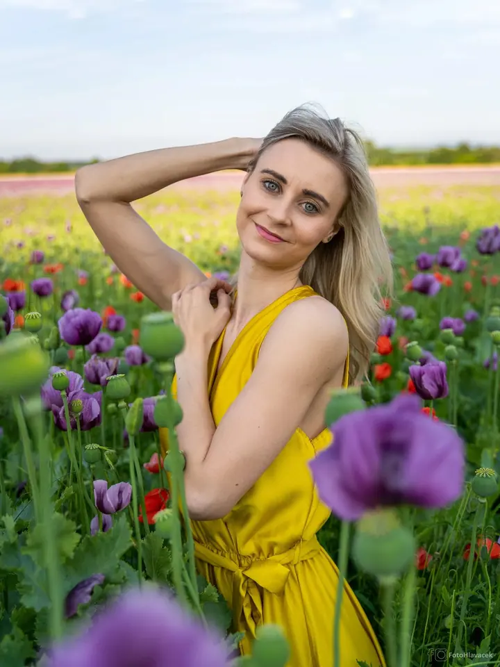
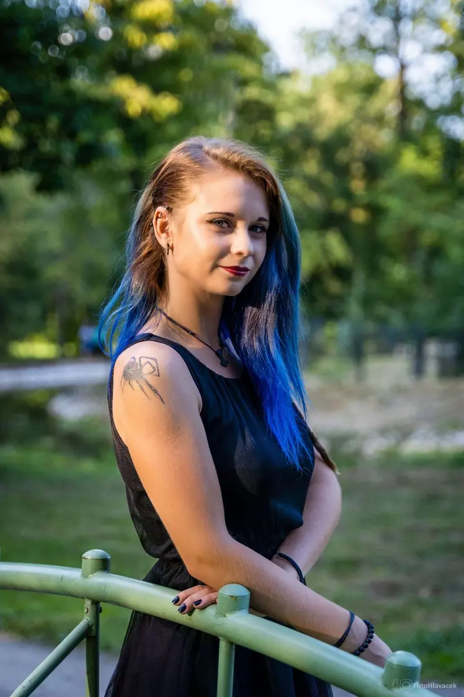
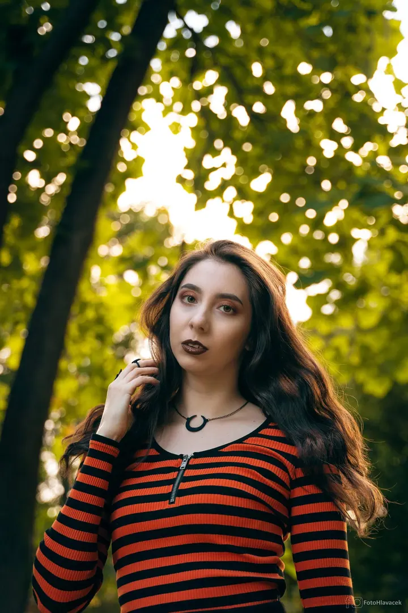
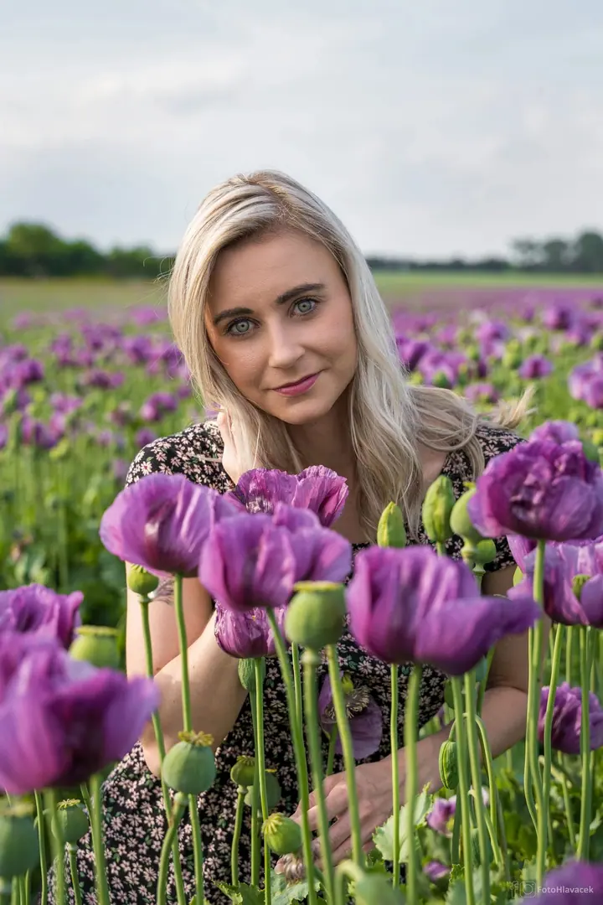
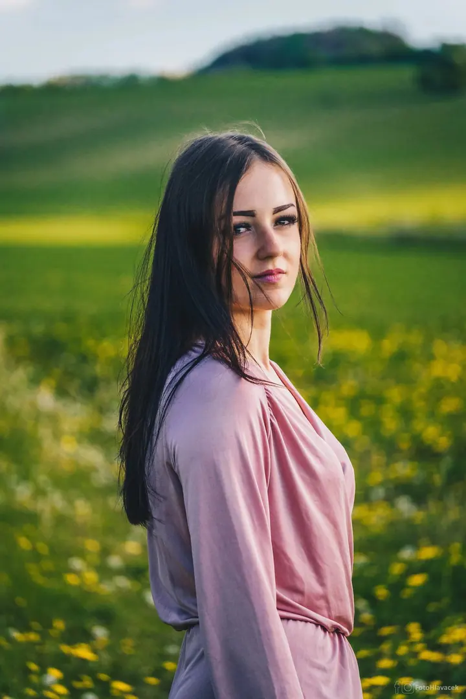
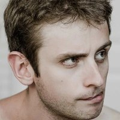

01 / 04
Portrétní focení
Solo portréty venku, v přírodě, v parku nebo ve městě. Při focení si dáme 1 až 2 hodiny, takže nikam nespěcháme, a z náhledů si pak vyberete fotky k úpravě.
Zeptat se na termín→




Portréty v přirozeném světle Moravy
Zeptat se na termín →(01) Ahoj
Jmenuji se Petr Hlaváček a jsem fotograf z Uherského Hradiště. Nejraději fotím portréty venku , mezi stromy, na louce nebo v rozkvetlém poli . Rád vám nafotím i párové a rodinné fotky, svatbu nebo oslavu .
(02) Co fotím
01 / 04
Solo portréty venku, v přírodě, v parku nebo ve městě. Při focení si dáme 1 až 2 hodiny, takže nikam nespěcháme, a z náhledů si pak vyberete fotky k úpravě.
Zeptat se na termín→Dále nabízím
Nafotím jen obřad s portréty, nebo celý den od příprav po večerní zábavu. Všechny fotky projdou pečlivou úpravou, párové navíc detailnější retuší.
↗Focení pro dva nebo pro celou rodinu v exteriéru. Je to stejně klidné jako u portrétů, jen je vás před objektivem víc.
↗Oslavy, události, koncerty a vystoupení. Platí se podle hodin, nejméně za jednu hodinu.
↗(04) Postup
Od první zprávy po hotovou galerii.
Krok 1 z 4
Ozvěte se e-mailem, přes WhatsApp nebo chat. Při práci telefon nezvedám, takže psaní je jistější a odpovím co nejdřív.
Krok 2 z 4
Vybereme místo, termín a rozsah focení. U svateb vám pošlu návrh smlouvy a termín se rezervuje zálohou 1 500 Kč.
Krok 3 z 4
Fotíme v klidu a venku, kde je pěkné světlo. U portrétu počítejte s 1 až 2 hodinami.
Krok 4 z 4
Z náhledů si vyberete fotky, které upravím. Všechny projdou pečlivou úpravou, párové navíc detailnější retuší.
Stačí dobré světlo a trocha klidu
(05) Za objektivem
Jsem fotograf z Uherského Hradiště. Nejčastěji fotím ve Zlínském, Jihomoravském a Olomouckém kraji, tedy ve Zlíně, Kroměříži, Hodoníně a všude v okolí. Když se domluvíme, přijedu kamkoliv jinam na Moravě.
Nejvíc mě baví portréty v exteriéru. Hledám místa s pěkným světlem, třeba park, kamenné schodiště nebo makové pole, a pak už se jen snažím, abyste se před foťákem cítili dobře. Fotím i svatby, páry, rodiny, oslavy a koncerty. Ve volném čase fotím přírodu a krajinu.
Všechny fotky pečlivě upravuji, u párových si dávám víc práce s detailní retuší. Než mi pošlete zálohu, dostanete ode mě návrh smlouvy, který si v klidu projdete. Příležitostně fotím i formou TFP.

Petr
Petr Hlaváček · Portrétní a svatební fotograf
Portrétní, párové nebo rodinné focení venku trvá 1 až 2 hodiny a stojí 990 Kč včetně 6 upravených fotek. Každá další fotka stojí 100 Kč a můžete si ji z náhledů vybrat i později.
Do 3 hodin focení se 100+ fotkami za 5 490 Kč, do 5 hodin s 200+ fotkami za 7 990 Kč a do 8 hodin s 300+ fotkami za 11 490 Kč. Když potřebujete něco jiného, domluvíme se individuálně.
Do 15 km od Uherského Hradiště je doprava v ceně. Dál účtuji 12 Kč za kilometr podle vzdálenosti na mapě a cesta zpět je už v té částce.
Oslavy, koncerty a vystoupení fotím za 1 000 Kč za hodinu, nejméně za jednu hodinu. Zvířata, nemovitosti, auta a produkty nacením individuálně.
(07) Kontakt
Napište pár vět o tom, co si představujete, a termín, který se vám hodí.